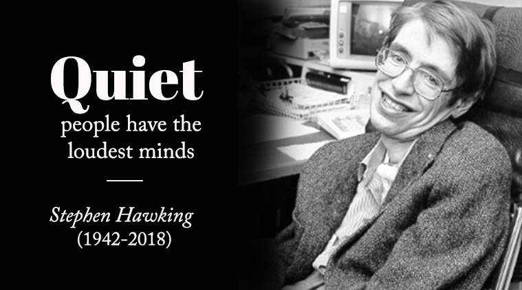
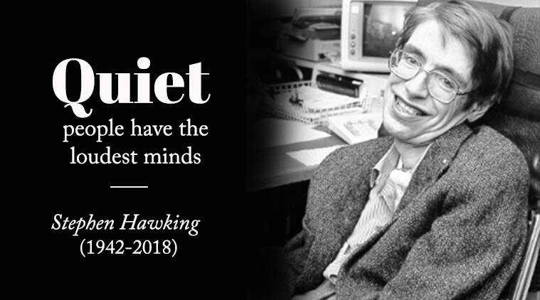

Stephen William Hawking (8 January 1942 – 14 March 2018) was an English theoretical physicist, cosmologist, and author who, at the time of his death, was director of research at the Centre for Theoretical Cosmology at the University of Cambridge.Between 1979 and 2009, he was the Lucasian Professor of Mathematics at the University of Cambridge.
Hawking was born in Oxford, into a family of physicians. In October 1959, at the age of 17, he began his university education at University College, Oxford, where he received a first-class BA degree in physics. In October 1962, he began his graduate work at Trinity Hall, Cambridge, where in March 1966, he obtained his PhD degree in applied mathematics and theoretical physics, specialising in general relativity and cosmology. In 1963, Hawking was diagnosed with an early-onset slow-progressing form of motor neurone disease (amyotrophic lateral sclerosis – ALS, for short) that gradually, over the decades, paralysed him.After the loss of his speech, he communicated through a speech-generating device initially through use of a handheld switch, and eventually by using a single cheek muscle.